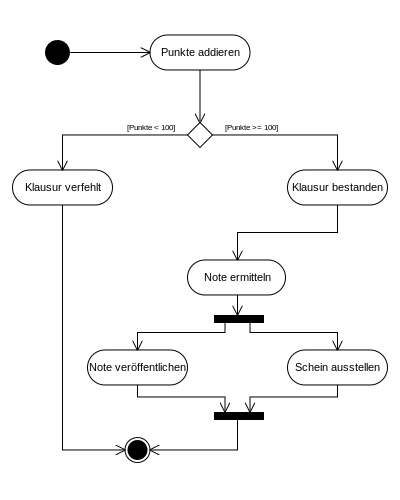
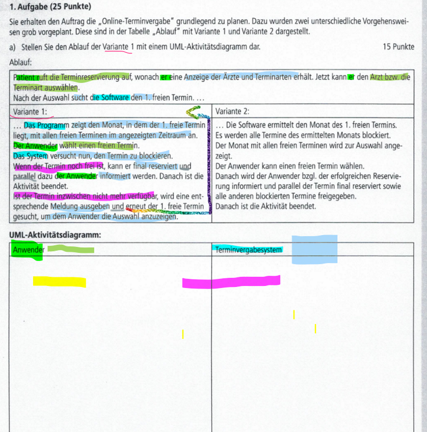
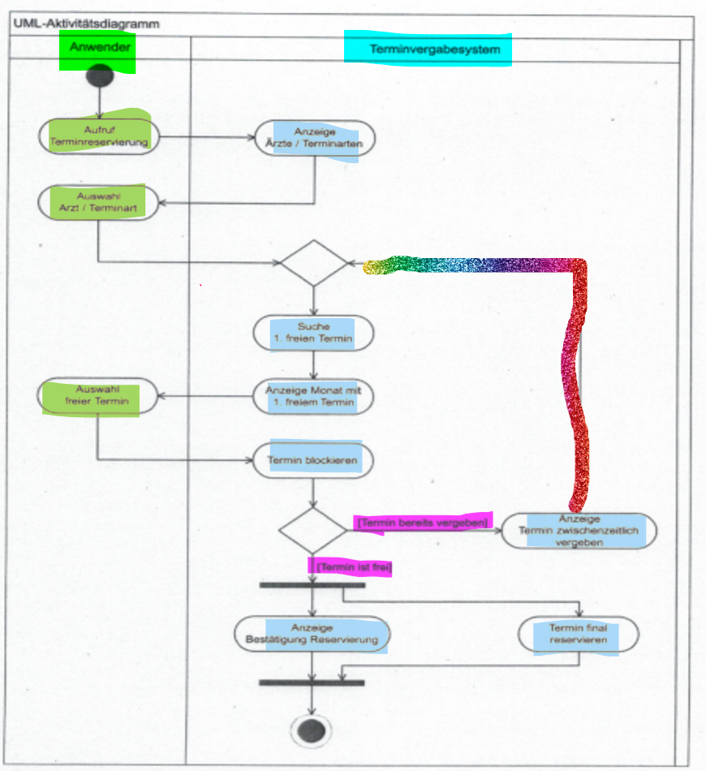

CHEATSHEET - UML Aktivitätsdiagramm
Definition: Aktivitätsdiagramm
- ist ein Verhaltensdiagramm der Unified Modeling Language (UML)
- stellt die Vernetzung von elementaren Aktionen und deren Verbindungen mit Kontroll- und Datenflüssen grafisch dar.
Beispiel-1:

Beispiel-2:

IHK-Beispiel-Aufgabe

Lösung

Vorgehensweise
- Makieren
- Akteure im Text ausfindig machen
- Aktionen der Akteure herausfinden
- Aktionen sinnvoll benennen
- Kontrollstrukturen ermitteln - z.B. Schliefen, Verzweigungen, Parallele Aktionen
- Vorüberlegungen anstellen
- Wenn nötig Skizze anfertigen
- Zeichen
- Text schritt für Schritt durchgehen
- Akteure einzeichnen
- Pro Akteur eine Schwimmbahn anlegen
- Aktionen bei den passenden Akuteren eintragen